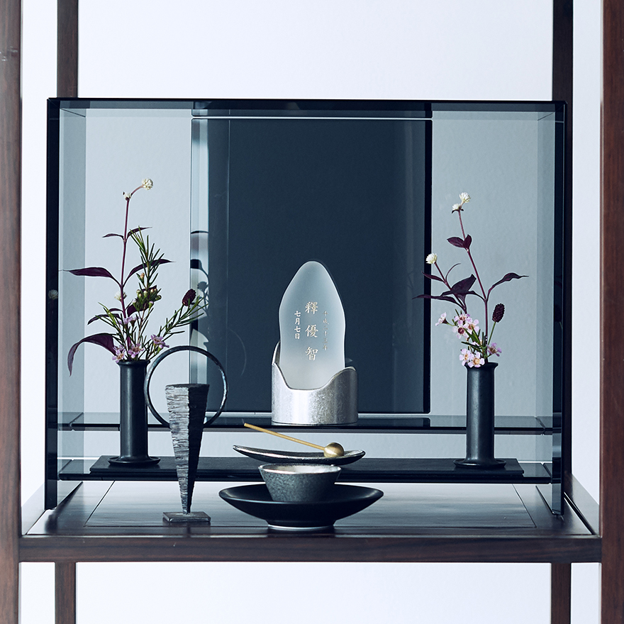
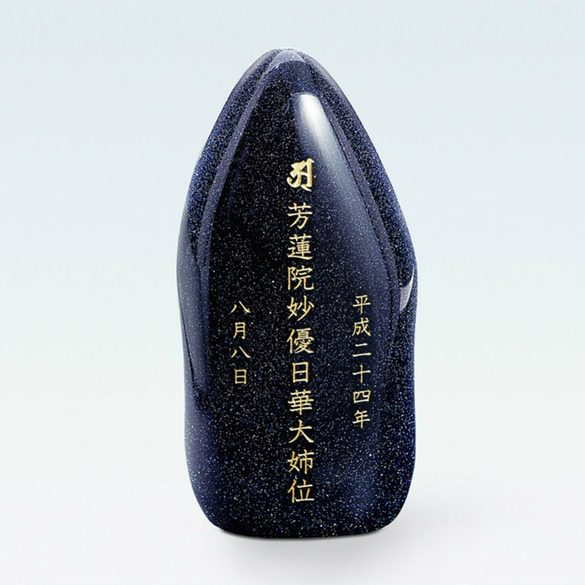
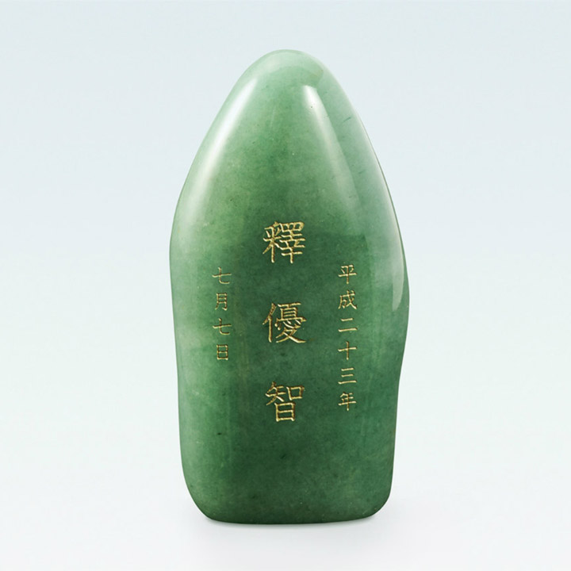
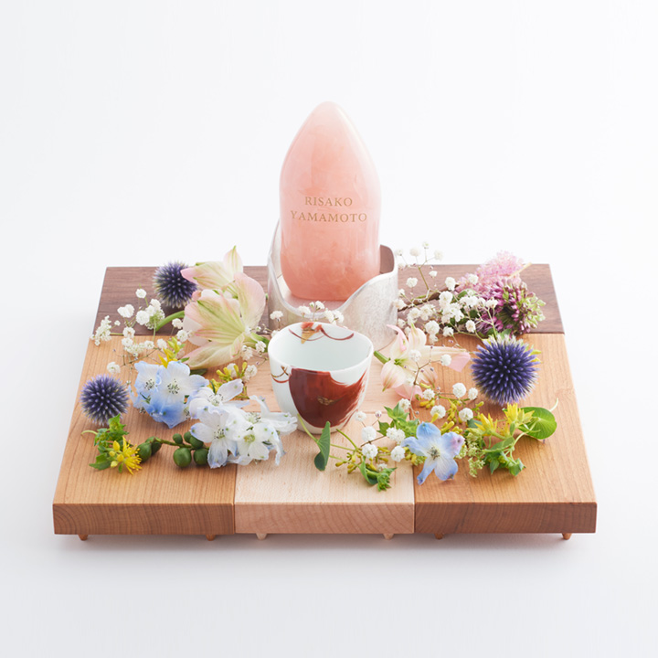

Home › MA Do › Device › 祈りの道具屋 まなか › 星牌® 石




color: 消水晶 / 紫金石 / アベン / ピンククォーツ
-
消水晶
¥55,000 税込
-
紫金石
¥66,000 税込
-
アベン
¥77,000 税込
-
ピンククォーツ
¥77,000 税込
商品説明
あの人を感じる唯一無二の天然石のお位牌
『星牌』は、東日本大震災の際に位牌や仏壇が流され、途方に暮れた人達に向けてつくりました。何かにすがりたい時こそ、心の拠り所になるものが必要だと思ったからです。
お星さまになったあの人が『星牌』として還ってくる。そんな想いを名前に込めました。
手で触れて、語りかけ、いつも一緒にいることができるお位牌。
生前と同じように、あなたらしい接し方で、大切なあの人を身近に感じてください。
よくあるご質問
- Q. お位牌を作る際、戒名（法名）は必要ですか？
- お寺とのお付き合いがない場合※、俗名（生前のお名前）でお位牌を作る方も増えています。お客様がご供養しやすいかたちで、大切な方のお位牌に相応しいお名前をお選びください。
※お寺とのお付き合いがある場合（先祖代々のお墓に納骨する、仏式のお葬式を執り行うなど）、お寺より戒名を授かります。 - Q. 黒塗りのお位牌でなくとも、魂入れしてもらえますか？
- 今までお寺での魂入れをお断りされたというお話はありません。あるお客様は、ご住職から「素敵なお位牌ですね」とお褒めいただいたようです。どうしても心配でしたら、一度お寺にご確認ください。
仕様
| サイズ | 位牌：幅5cm～×奥行3.3cm～×高さ10cm～ 携帯用布袋：約幅5.5～10cm×高さ17cm×マチ4cm |
|---|---|
| 素材 | 天然石 |
| 生産地 | 山梨県甲府市 |

手になじむ独特のかたち
「星牌」はあの人との距離を近づけるために、手に取ったとき、しっくりと馴染み、手のひらにやさしく収まる形を求めました。そのために30人以上の手型を元に、何度も試行錯誤して完成しました。利き手を問わず自然に握れる形になるよう工夫しています。

魂を入れるにふさわしい
天然石
美しさや普遍性・耐久性を兼ね備え、故人の魂を受け入れるにふさわしい天然石を採用しました。ピンククォーツ、消水晶、紫金石、アベンの４種類の石で、あの人を感じる「世界にひとつだけ」のかたちを、やさしく作りました。

熟練の職人が
一つひとつ手仕上げ
天然石の国内有数産地である山梨県。そこに工房を構える研磨の匠・詫間宝石彫刻の職人が、自然からいただいた大切な石を、卓越した匠の技で丹念に仕上げています。甲府の職人が磨く、宝石の輝きを持った天然石のお位牌は、色や形、一つひとつに違った個性があります。大切なあの人を思い浮かべて、ぴったりの一品を選んでみてください。

甲府で、石を磨く人たち
【詫間宝石彫刻 Takuma Studio】
日本有数の水晶の産地、甲府。
美しい山々に囲まれたこの地は、古くから水晶加工で栄えてきました。
詫間宝石彫刻は、先代から受け継いだものづくりの姿勢と伝統の技で、厳選した石をひとつひとつ丁寧に磨き上げます。
冷たい印象になりがちな天然石に、あたたかみを宿す。
それが、詫間兄弟のものづくりです。